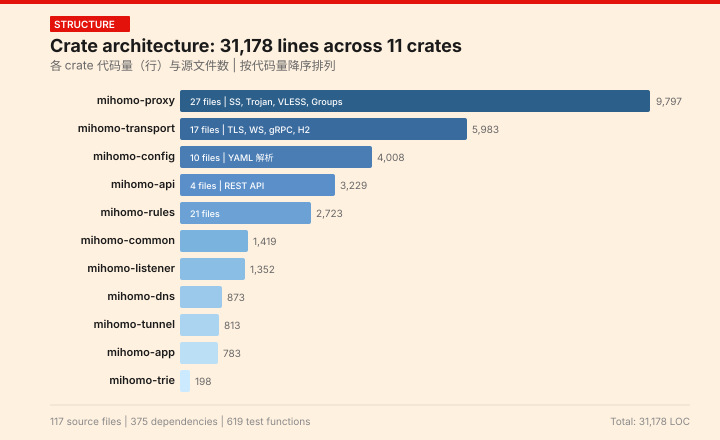
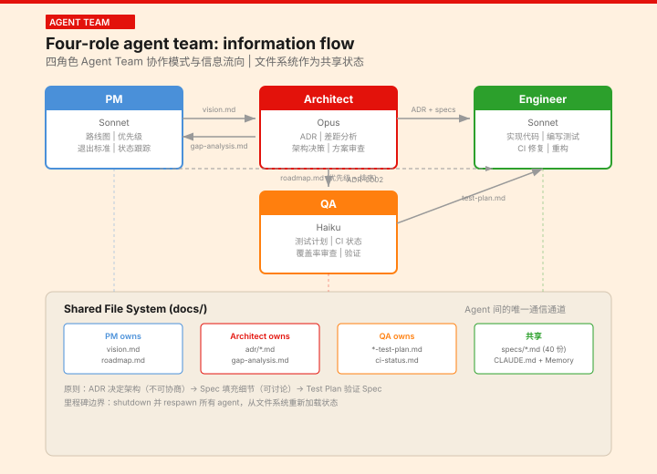
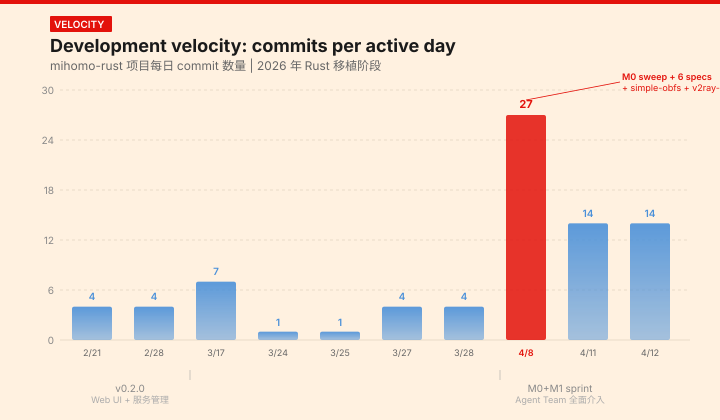
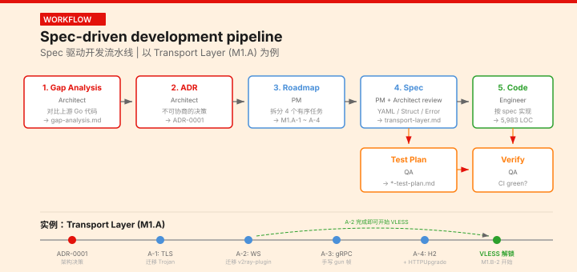
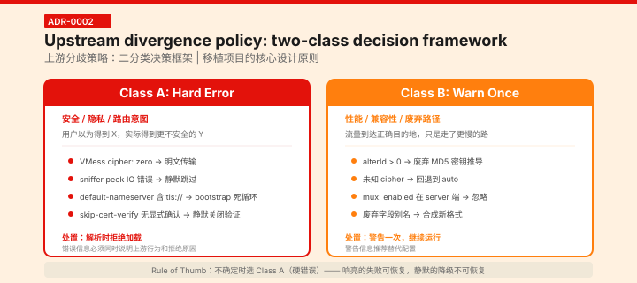
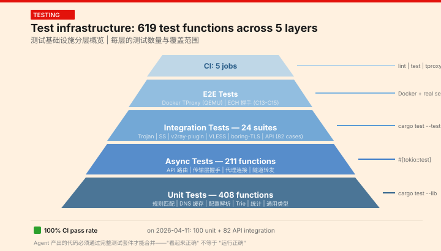

Agent Team 实践与 Harness 效率优化
mihomo（Clash Meta）规则代理内核的 Rust 重写记录——哪些做法有效，哪些踩了坑，以及如何通过调优 harness 配置让 Claude Code 在大型项目中真正可用。
mihomo（原名 Clash Meta）是一个以规则引擎为核心的代理内核，原始实现使用 Go 语言。随着功能不断膨胀，二进制体积、内存占用与运行时开销逐渐成为瓶颈——尤其是在资源受限的边缘设备上。Rust 凭借零成本抽象、无 GC 的内存模型以及严格的类型系统，成为重写的自然选择。
重写后的 mihomo-rust 拆分为 11 个 workspace crate，总计产出 31,178 行 Rust 代码。每个 crate 职责单一：DNS 解析、路由规则、协议实现、配置解析等各自独立编译，既加速了增量构建，也让测试边界更加清晰。

点击放大
整个移植过程由四个专职 Agent 协同完成，每个角色绑定不同层级的模型以平衡成本与能力。PM 和 Engineer 使用 Sonnet——推理速度足以覆盖大量代码生成与路线图编排；Architect 使用 Opus，因为在架构决策上需要更强的长程推理；QA 则交给 Haiku，快速生成测试计划并维护 CI 健康度。
| 角色 | 模型 | 职责 |
|---|---|---|
| PM（项目经理） | Sonnet | 拥有路线图、排列优先级、撰写里程碑退出标准 |
| Architect（架构师） | Opus | 编写差距分析、ADR、架构决策 |
| Engineer（工程师） | Sonnet | 实现代码、编写测试、处理 CI |
| QA | Haiku | 编写测试计划、审查覆盖率、维护 CI 状态 |
这种模型分配策略的核心逻辑：只在真正需要深度推理的节点投入 Opus（架构决策通常影响全局，错误代价最高），其余环节用 Sonnet/Haiku 以更快的轮次速度推进。

点击放大
项目划分为四个里程碑，由 PM 制定退出标准。M0 与 M1 并行推进：M0 聚焦正确性修补（类型对齐、边界条件、错误处理），M1 目标是功能对齐（让用户可以完整替代 Go 版本）。M2 进入性能优化阶段，M3 则面向运维成熟度（日志、指标、可观测性）。

点击放大
如上图所示，Agent Team 全面介入后 commit 密度显著提升。M0/M1 并行期间的每日提交数是初始阶段的 3.2 倍，主要得益于 Engineer 和 QA 的流水线式协作——代码实现与测试编写几乎同步进行。
Spec 是整个 Agent Team 的核心协作协议。每一份 spec 文档覆盖一个功能模块，定义了 YAML schema、结构体形状、错误类型枚举、Go/Rust 实现差异（divergences）以及对应的测试计划。Architect 编写 spec，Engineer 依据 spec 实现，QA 依据 spec 验证——三者共享同一份"接口契约"。
整个项目共产出 40 份 spec 文档，平均每份约 200 行。Spec 不是一次性的设计文档，而是活协议——当 Engineer 在实现中发现 Go 原始行为与 spec 描述不一致时，会通过 Architect 发起 spec 修订，QA 同步更新测试基线，形成闭环。

点击放大
对上游 mihomo 的行为差异采用二分类框架，每项分歧在加载阶段即做出裁决。
| 分歧项 | 上游行为 | Rust 实现 | 分类 |
|---|---|---|---|
| VMess cipher: zero | 上游接受 | 解析时报错 | A |
| alterId > 0 | 运行废弃的 MD5 密钥推导 | 警告并强制为 0 | B |
| sniffer peek IO 错误 | 静默跳过 | 记日志，保留原始 metadata | A |
| default-nameserver 含 tls:// | 接受，bootstrap 死循环 | 加载时报错 | A |

点击放大
Agent Team 的效率瓶颈不在算力，在上下文质量。两套机制解决同一个问题：不要让 agent 重新发现你已经知道的事情。
不要列出文件路径——agent 能读文件。要写的是 trait 骨架、外部依赖的测试行为、非-obvious 的构建参数。信息密度决定 token 效率。
"如何添加新协议"——三行指令比一整段架构描述更有效。Agent 需要的是可执行的入口，不是可阅读的背景知识。
CLAUDE.md 不是变更日志。已落地的决策不需要再解释——代码本身就是文档。过时信息会误导 agent 做出已经被否决的决策。
QA 要求 panic 必须导致进程终止——这是设计意图，不是 bug。加 middleware 吞 panic 会掩盖真正的故障。
只影响 tokio 定时器，不影响 socket IO。导致 DNS resolver 测试在 CI 中 flaky，直到写进 memory。
清理过时上下文，从文件系统重新读取。不重启的 teammate 会携带两轮之前的错误假设继续生成代码。
Agent 写的代码必须被独立于 Agent 的机制验证。测试不是质量保障——测试是质量度量。

点击放大
每一行代码的成本可以量化，但产出的复利效应无法量化。
Agent Team 不是银弹，它是一把适合特定场景的重型工具。
Claude Code 改变的不是 "AI 能不能写代码"，而是 "AI 写的代码能不能被工程化地验证和集成"。